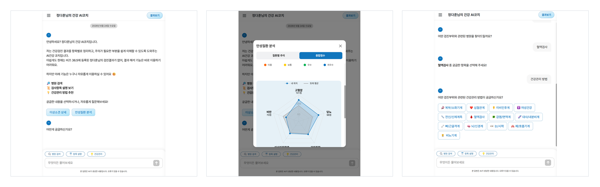
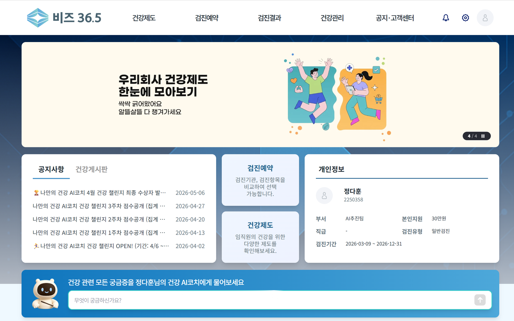
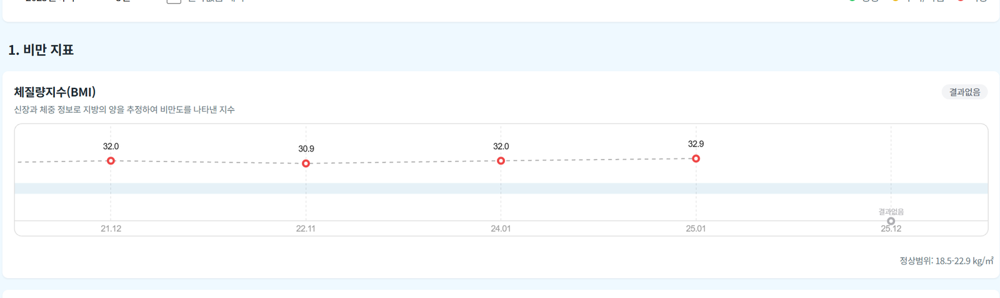
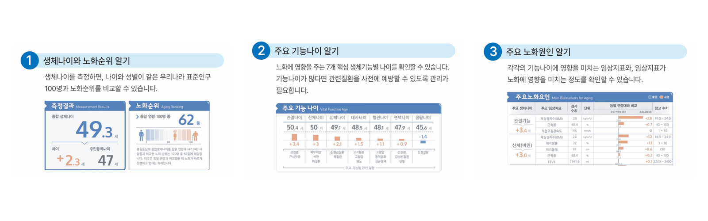

핵심 기여
AI 모델의 답변을 단순히 출력하는 화면이 아니라, 검진 결과를 이해하고 질문할 수 있는 상담 경험으로 구성했습니다. SSE 기반 스트리밍 응답, AI API 응답 규격 조율, 검진 결과 해석 흐름 구성, 예외 케이스 검증을 통해 실제 사용 가능한 AI 건강 상담 서비스로 개선했습니다.
Project 01 / AI Healthcare Coach
건강검진 결과를 사용자가 이해하고 질문할 수 있는 AI 상담 서비스로 전환했습니다.
Healthcare AI Service
나만의 건강 AI코치는 사용자의 건강검진 결과를 기반으로 건강 상태를 설명하고, 궁금한 내용을 대화형으로 안내하는 AI 건강 상담 서비스입니다. 단순히 검진 수치를 보여주는 것이 아니라 사용자가 자신의 건강 상태를 이해하고 다음 행동을 결정할 수 있도록 돕는 것이 핵심입니다.

AI 모델의 답변을 단순히 출력하는 화면이 아니라, 검진 결과를 이해하고 질문할 수 있는 상담 경험으로 구성했습니다. SSE 기반 스트리밍 응답, AI API 응답 규격 조율, 검진 결과 해석 흐름 구성, 예외 케이스 검증을 통해 실제 사용 가능한 AI 건강 상담 서비스로 개선했습니다.
Project 02 / B2B Healthcare Platform
기업 건강관리 기능을 고객사별로 확장 가능한 B2B 플랫폼 구조로 개선했습니다.
B2B Platform
비즈 36.5는 기업 임직원의 건강검진과 건강관리를 통합 제공하는 B2B 건강관리 플랫폼입니다. 임직원은 하나의 플랫폼에서 검진 예약, 검진 결과 확인, 건강제도 확인, 사후관리, 건강관리 서비스를 이용할 수 있습니다.
이 서비스의 핵심은 고객사마다 다른 건강검진 제도와 운영 조건을 하나의 플랫폼 안에서 처리하는 것입니다.


고객사마다 달라지는 건강관리 제도와 운영 조건을 반복 가능한 B2B 플랫폼 구조로 정리했습니다. 단순 화면 개편이 아니라 고객사별 브랜딩, 메뉴 노출, 제도 조건, 검진 결과 추이분석, AI코치 진입 흐름을 하나의 서비스 구조 안에서 관리할 수 있도록 개선했습니다.
Project 03 / Health Data Report Service
검진 데이터를 생체나이 리포트로 안정 생성하고 운영할 수 있도록 개선했습니다.
Health Data Report
바이오에이지는 건강검진 데이터를 기반으로 사용자의 생체나이와 질병 위험도를 분석해 리포트로 제공하는 서비스입니다. 단순한 검진 결과표가 아니라 사용자의 실제 건강 상태를 나이와 위험도 관점에서 이해할 수 있도록 돕습니다.

검진 데이터가 최종 리포트로 생성되는 흐름을 이해하고, 운영 이슈 발생 시 원인을 추적할 수 있는 구조로 개선했습니다. 단순 리포트 제작이 아니라 DB, API, PDF 생성 흐름을 확인하며 문제 범위를 좁혔고, 고객 전환과 리포트 제작 과정을 안정화했습니다.